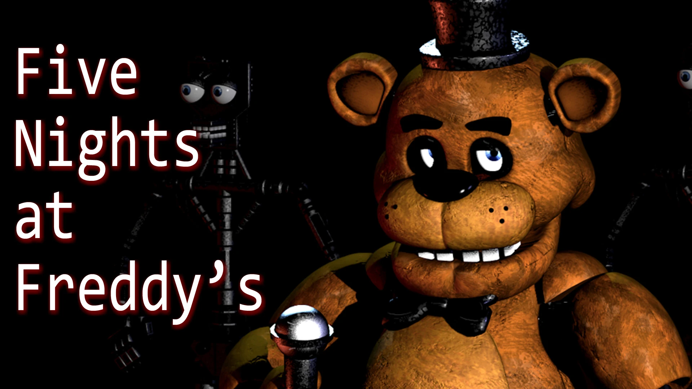
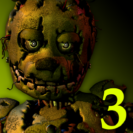
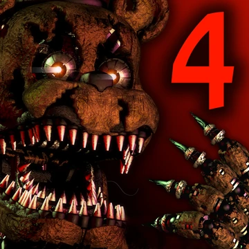
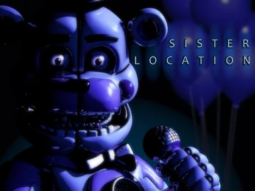

Про гру
Five Nights at Freddy's (FNAF) — це серія хорор-ігор, створена Скоттом Коутоном. Гравець бере на себе роль нічного охоронця, який має вижити серед аніматроніків.
Основні частини
FNAF 1

Перша частина, де гравець працює в піцерії та захищається від аніматроніків.
FNAF 2

Приквел до першої частини з новими аніматроніками та маскою Фредді.
FNAF 3

Події відбуваються в атракціоні жахів, головний ворог — Springtrap.
FNAF 4

Головний герой — маленький хлопчик, якого фанати називають Crying Child («Плачуча дитина»). Він боїться аніматроніків ресторану Fredbear's Family Diner, особливо Fredbear. Його постійно лякає старший брат (імовірно Michael Afton) разом із друзями в масках аніматроніків.
FNAF 5 (sister location)

Five Nights at Freddy's: Sister Location — це гра, де лор Five Nights at Freddy's різко переходить від «просто страшної піцерії» до історії про експерименти, роботи-вбивці та сім’ю Афтонів.